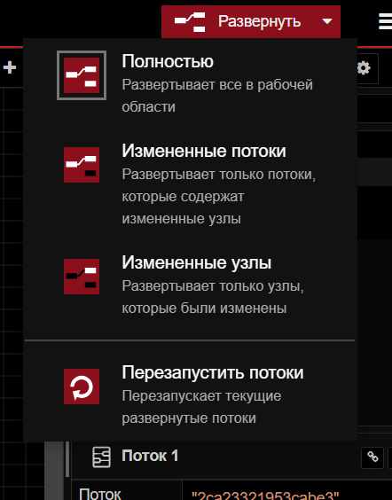
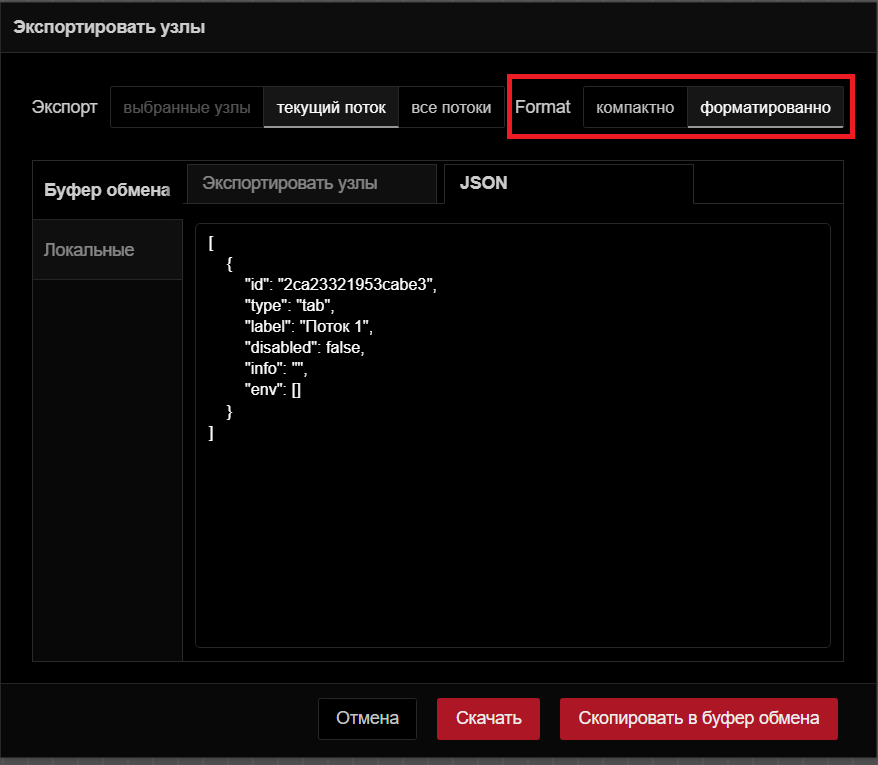
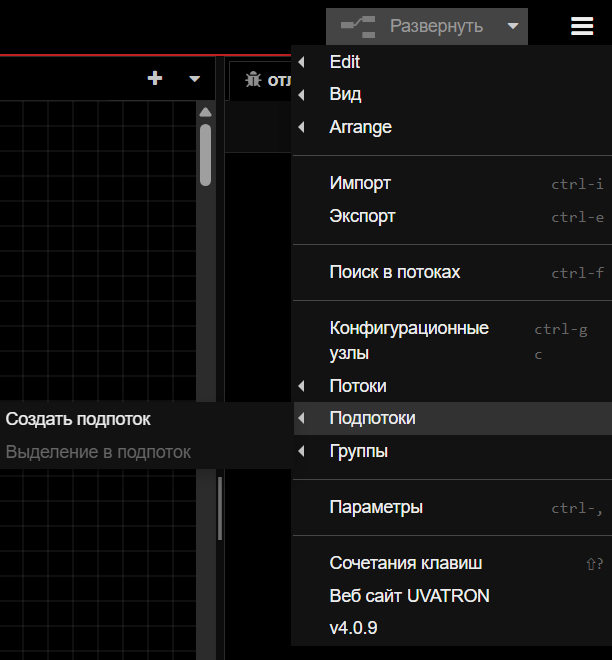

Компонент заголовка редактора U-LOGIC
Заголовок редактора U-LOGIC — это центральный компонент, который упрощает навигацию по основным настройкам U-LOGIC, предоставляет кнопку развертывания для выполнения потоков и доступ к профилю пользователя.
Кнопка развертывания
С правой стороны заголовка вы найдете красную кнопку развертывания. Нажатие на нее запускает все потоки в экземпляре. Красный цвет указывает на ожидающие изменения для развертывания, а серый — на отсутствие ожидающих изменений.


Чтобы развернуть все в рабочей обалсти, или только потоки, содержащие измененные узлы, или только узлы, которые были изменены, или перезапустить развернутые потоки, нажмите на значок раскрытия кнопки развертывания. Выберите предпочитаемый вариант и затем нажмите кнопку развертывания соответственно

Главное меню
Сразу после профиля пользователя в правом углу вы увидите значок меню. Нажав на него, вы откроете список опций, которые упрощают работу с U-Logic.
Ниже приведены опции, доступные в главном меню.
Edit
Первая опция в меню позволяет выполнять основные действия по редактированию. Наведение на нее открывает дополнительные опции, такие как «Отменить последнее выполненное изменение», «Выбрать все узлы», «Скопировать выбранные узлы» и т. д.

Отменить последнее выполненное изменение: Отменяет последнее действие или серию действий, выполненных в редакторе.
Redo: Повторно применяет действие, которое было ранее отменено с помощью команды «Отменить последнее выполненное изменение».
Вырезать выбранные узлы: Удаляет выбранные узлы из рабочей области и временно сохраняет их в буфере обмена.
Скопировать выбранные узлы: Сохраняет дубликат выбранных узлов в буфере обмена, не удаляя их из исходного потока.
Вставить узлы: Позволяет вставлять скопированные или вырезанные узлы из буфера обмена обратно в рабочий процесс.
Copy group style: Сохраняет стиль выбранной группы в буфере обмена.
Paste group style: Применяет сохраненный стиль группы к другой выбранной группе.
Выбрать все узлы: Выбирает все группы потоков в текущей рабочей области.
Выбрать все соединенные узлы: Выбирает узлы, подключенные к текущим выбранным узлам.
Select none: Отменяет выбор всех выбранных узлов или групп.
Split selection with Link nodes: Соединяет выбранные узлы с помощью узлов связи.
Вид
Эта опция позволяет пользователям управлять отображением и видимостью различных элементов интерфейса в редакторе U-Logic и обеспечивает им беспрепятственный доступ к этим элементам.

Показывать палитру: переключает видимость палитры U-Logic
Показывать боковую панель: включает и выключает видимость боковой панели.
Журнал событий: открывает журнал, в котором регистрируются события и действия в U-Logic.
Список действий: предоставляет список доступных действий или задач в U-Logic, что позволяет быстро получить доступ к часто используемым операциям и функциям.
Отладочные сообщения: отображает сообщения, сгенерированные узлами отладки.
Arrange
Эта опция позволяет вам упорядочивать и управлять выбранными группами потоков в рабочем пространстве U-Logic:

Align to Left: Выравнивает выбранные группы потоков по левому краю рабочей области. (Сочетание клавиш: alt + a l)
Align to Center: Центрирует выбранные группы потоков по горизонтали в рабочей области. (Сочетание клавиш: alt + a c)
Align to Right: Выравнивает выбранные группы потоков по правому краю рабочей области. (Сочетание клавиш: alt + a r)
Align to Top: Выравнивает выбранные группы потоков по верхнему краю рабочей области. (Сочетание клавиш: alt + a t)
Align to Middle: Центрирует выбранные группы потоков по вертикали в рабочей области. (Сочетание клавиш: alt + a m)
Align to Bottom: Выравнивает выбранные группы потоков по нижнему краю рабочей области. (Сочетание клавиш: alt + a b)
Distribute Vertically: Равномерно распределяет выбранные группы потоков по вертикали в рабочей области. (Сочетание клавиш: alt + a v)
Distribute Horizontally: Равномерно распределяет выбранные группы потоков по горизонтали в рабочей области. (Сочетание клавиш: alt + a h)
Move Back: Перемещает выбранные группы потоков на один слой назад в порядке наложения.
Move Front: Перемещает выбранные группы потоков на один слой вперед в порядке наложения.
Move Backward: Перемещает выбранные группы потоков на одну позицию назад в порядке наложения.
Move Forward: Перемещает выбранные группы потоков на одну позицию вперед в порядке наложения.
Импорт
Эта опция позволяет импортировать файл приложения flow.json. В общем, вам доступны два основных метода импорта: вы можете использовать поле «Буфер обмена» или загрузить файл из локальной системы, нажав «выберите файл для импорта».

Кроме того, снизу можно выбрать область, в которой поток должен импортироваться:
текущий поток: Выбор «текущий поток» импортирует поток в существующую рабочую область.
новый поток: Выбор «новый поток» создаст новое рабочее пространство для импортированного потока после нажатия кнопки импорта.
С левой стороны после буфера обмена вы найдете три опции:
Локальные: Здесь вы можете просмотреть локальную библиотеку потоков, которая содержит потоки, созданные в том же экземпляре U-Logic. Эта библиотека доступна только из того же экземпляра, где были созданы потоки.
Примеры: В этом разделе содержатся примеры потоков для всех основных узлов, а также сторонних узлов, которые вы установили, если они были добавлены.
Экспорт
Эта опция позволяет экспортировать созданный вами поток приложений. Обычно она предоставляет две основные опции: «Скопировать в буфер обмена», которая позволяет копировать flow.json, и «Скачать», которая загружает flow.json файл.

Кроме того, вы можете выбрать область, из которой будет экспортироваться поток приложений, из верхних опций:

выбранные узлы: Выбор этой опции позволяет экспортировать только выбранные узлы из потока.
текущий поток: Выбор этой опции позволяет экспортировать приложение из текущей рабочей области потока.
все потоки: Выбор этой опции позволяет экспортировать поток из всех потоков в данном экземпляре.
В верхней части вы увидите две вкладки:
Экспортировать узлы: Эта вкладка позволяет увидеть узлы и потоки, которые вы собираетесь экспортировать.
JSON: Эта вкладка покажет поток в формате JSON, который вы собираетесь экспортировать.

компактно: Это уплотнит ваш JSON-файл потока в одну строку.
форматированно: Это отформатирует JSON-файл потока, сделав его более удобным для чтения или проверки.
С левой стороны после буфера обмена вы найдете еще опцию:

Локальные: Эта опция позволяет создать коллекцию потоков, которые вы создали в текущем экземпляре U-Logic. Вы можете создать новую папку, нажав на значок с тремя точками в правом верхнем углу и выбрав «Новая папка». Кроме того, внизу вы найдете поле ввода, которое позволяет изменить имя файла потока. Нажатие на «Экспорт в библиотеку» сохранит его в коллекции. Теперь вы можете получить доступ к своей коллекции в том же экземпляре.
Поиск в потоках


Эта опция позволяет выполнять поиск групп потоков, созданных в этом экземпляре U-Logic.
Конфигурационные узлы

При нажатии на эту опцию откроется вкладка «конфиг» боковой панели, которая позволит вам управлять всеми узлами конфигурации текущего экземпляра U-Logic.
Потоки

Эта опция позволяет управлять вкладками потока.
Добавить: добавляет новую вкладку потока.
Edit: Редактирует текущую вкладку потока.
Удалить: удаляет текущую вкладку потока.
Подпотоки

Эта опция позволяет создать подпоток.
Создать подпоток: создает новую вкладку подпотока.
Выделение в подпоток: преобразует выбранные узлы в подпоток.
Группы

Эта опция позволяет управлять группами потоков.
Сгруппировать выделенное: группирует выбранные узлы.
Разгруппировать выделенное: разгруппирует выбранную группу потоков.
Объединить выделение: объединяет выбранные группы потоков.
Удалить из группы: удаляет выбранные узлы из группы.
Управление палитрой
Это позволяет пользователям управлять узлами, доступными в их среде U-Logic. Это включает установку новых узлов, обновление существующих и удаление узлов, которые больше не нужны.
Он содержит две основные вкладки:
Узлы: эта вкладка показывает список установленных узлов. В правом углу каждой записи узла есть опции для:

удалить: удалить узел.
отключить все: Временно отключить узел.
Установить: эта вкладка позволяет устанавливать сторонние узлы U-Logic из реестра npm.

сортировать: это параметры сортировки, которые позволяют сортировать по relevance (по умолчанию), по алфавиту и по дате.
Обновить список модулей: обновить список доступных сторонних узлов.
Параметры

Вид: настройка параметров редактора и параметров интерфейса.
Язык: выберите язык для редактора U-Logic.
Restore zoom level on load: включение этой опции восстановит уровень масштабирования редактора при загрузке U-Logic.
Restore scroll position on load: включение этой опции восстановит позицию прокрутки редактора при загрузке U-Logic.
Показывать сетку: включите отображение сетки в рабочей области редактора.
Привязывать к сетке: включите привязку узлов к сетке.
Размер сетки: отрегулируйте размер квадратов сетки.
Показать статус узла: переключите, чтобы отобразить статус узлов в редакторе.
Показывать метки у недавно добавленных узлов: переключите, чтобы метки недавно добавленных узлов стали видимыми
Показать советы: переключите, чтобы отобразить подсказки в редакторе.
Show guided tours for new versions: включите пошаговые руководства для новых версий U-Logic.
Палитра: эта опция управления палитрой позволяет управлять узлами, доступными в вашей среде U-Logic.
Клавиши: настройте сочетания клавиш для эффективной навигации и работы в U-Logic.
Enviroment: Управление переменными окружения, используемыми в потоках U-Logic. Это включает в себя настройку, редактирование и удаление переменных, к которым узлы могут получить доступ во время выполнения.

+ добавить: Добавляет новую переменную среды.
x: Удалить соответствующие переменные среды.
Revert: отменяет изменения, внесенные в переменные среды.
Сочетание клавиш
Эта опция перенаправляет вас в интерфейс, где вы можете настроить сочетания клавиш для эффективной навигации и работы в экземпляре U-Logic.
Вебсайт U-Logic
Эта опция перенаправит вас на официальный сайт U-Logic.
v4.0.9
Эта опция отображает журнал изменений для текущей версии U-Logic на вкладке «Change Log» боковой панели, подробно описывая, что было изменено или исправлено по сравнению с предыдущими версиями.